### 構造化プログラミング入門 #### 第２回 ジャクソン流構造化プログラミング ------ #### USP友の会会員 鳥海 秀一 --- ### 注意 ------ #### シェル芸とは全く関係がありません --- ### 目的 ------ #### ハーラン・ミルズが上書きした #### 構造化プログラミングの定義を #### 再上書きすること --- ### 希望 ------ #### 本講義の内容を咀嚼して拡散して #### いただけると嬉しいです --- ### 謝辞 ------ #### 貴重な場を提供いただいたシェル芸 #### 勉強会の皆様に感謝いたします --- ### 講師 ------ * 名前 鳥海秀一 * 年齢 57歳 * 職業 プログラマ * 経歴 18歳のときにポケコンでプログラミングを始めて以来、約40年のプログラミングマニア --- ### 講義の予定 ------ * 第１回 間違いだらけの構造化プログラミング * 第２回 ジャクソン流構造化プログラミング * 第３回 非構造化プログラミングの可能性 --- #### 第１回 間違いだらけの構造化プログラミング ------ #### 振り返り --- ### 間違い その１ ------ * 構造化プログラミングは構造化定理を基礎とした主張である --- ### 正解 その１ ------ * 構造化定理とはハーラン・ミルズが自身が開発したクリームルーム手法の宣伝のために、ベームとヤコピーニの証明につけた詐欺的呼称 * ダイクストラの構造化プログラミングと構造化定理は無関係 --- ### 間違い その２ ------ * ダイクストラはすべての高級プログラミング言語からgoto文を廃止すべきだと主張している --- ### 正解 その２ ------ * 主張しているのは確かだが、ダイクストラが論じていることからこの結論は出てこない * 一方でダイクストラは機械的なgotoの除去に反対している --- ### 間違い その３ ------ * 構造化プログラミングは制御の流れに関する主張である --- ### 正解 その３ ------ * 構造化プログラミングは次の２つの異なる部分から構成された主張である 1. 計算の進行とプログラムのテキストの進行を一致させるとよい 1. 変数とそれを操作する関数をひとまとめにした仮想的な機械の集合としてプログラムを構成するとよい * ダイクストラは主として後者に対して構造化プログラミングと名づけたと思われる --- ### 間違い その３の影響 ------ * 2の主張は後にオブジェクト指向の議論へと発展する * 2の主張は無視されため、オブジェクト指向はよりセンセーショナルなものとなった --- ### 補足 goto文は無害 ------ * 状態遷移図が頭の中にあれば、gotoだらけのプログラムでもすごく見やすい * 隠れたgotoプログラムである「ループの中をフラグで行き来するプログラム」は世の中に溢れ、受け入れられている --- #### 第２回 ジャクソン流構造化プログラミング --- ### ジャクソン構造化プログラムとは ------ * イギリス生まれのコンサルタントのマイケル A. ジャクソンが提案したプログラムの開発技法 * 制御の流れではなくプログラムが処理するデータの構造からプログラムの構造を導出する * データ構造の分析表記法としてジャクソン構造図を使用する --- ### ジャクソン構造図とは ------ * 次の３つの図を組み合わせてデータを表現する <br> <br> <div style="display:flex"> <div style="width:30%;background-color:white">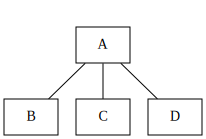</div> <div style="width:3%"></div> <div style="width:30%;background-color:white">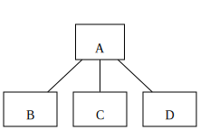</div> <div style="width:3%"></div> <div style="width:30%;background-color:white">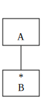</div> </div> --- #### 整数のジャクソン構造図による表現例 ------ 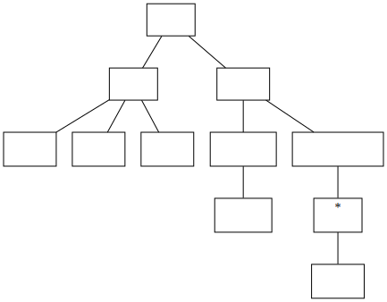 --- #### 次の問題にジャクソン法を適用しよう ------ 1. テキストファイル中の単語の数を数える 1. タブをスペースに置き換える（４タブ） 1. 浮動小数点数を判定する 1. C言語のソースからコメントを除去する --- #### 例題のプログラム例は下記のURLの下にあります ------ https://github.com/umidori/shellgei-58th-am/tree/main/program --- #### 例題１ テキストファイル中の単語の数を数える #### ジャクソン構造図の例 その１ ------ 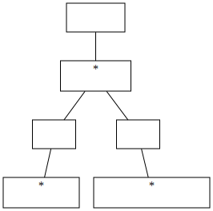 --- #### 前掲の構造図から導出したプログラム例 ------ ```c #include <stdio.h> #include <ctype.h> int main(void) { int c; int n; n = 0; while (1) { while ((c = getchar()) != EOF && isspace(c)) { } if (c == EOF) break; n++; while ((c = getchar()) != EOF && !isspace(c)) { } if (c == EOF) break; } printf("%d\n", n); return 0; } ``` --- #### 例題１ テキストファイル中の単語の数を数える #### ジャクソン構造図の例 その２ ------ 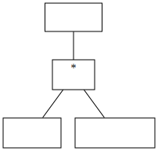 --- #### 前掲の構造図から導出したプログラム例 ------ ```c #include <stdio.h> #include <ctype.h> enum {NO, YES}; int main(void) { int c; int n; int inword; n = 0; inword = NO; while ((c = getchar()) != EOF) { if (isspace(c)) { inword = NO; } else if (inword == NO) { inword = YES; n++; } } printf("%d\n", n); return 0; } ``` --- #### 例題２ タブをスペースに置き換える（４タブ） #### ジャクソン構造図の例 その１ ------ 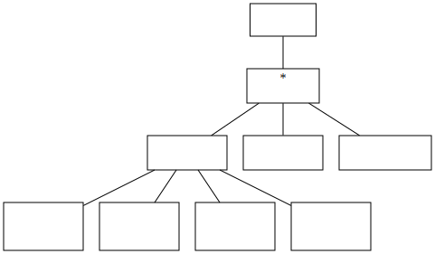 --- #### 前掲の構造図から導出したプログラム例 ------ ```c #include <stdio.h> const int TAB_NO = 4; int main(void) { int c; int n; int t; n = 0; while ((c = getchar()) != EOF) { if (c == '\t') { t = TAB_NO - n%TAB_NO; printf("%*s", t, ""); n += t; } else if (c == '\n') { putchar(c); n = 0; } else { putchar(c); n++; } } return 0; } ``` --- #### 例題２ タブをスペースに置き換える（４タブ） #### ジャクソン構造図の例 その２ ------ 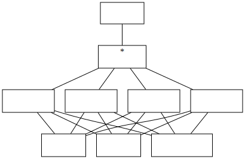 --- #### 前掲の構造図から導出したプログラム例 ------ ```c #include <stdio.h> int main(void) { int c; while (1) { if ((c = getchar()) == EOF) { break; } else if (c == '\t') { printf(" "); continue; } else if (c == '\n') { putchar(c); continue; } else { putchar(c); } if ((c = getchar()) == EOF) { break; } else if (c == '\t') { printf(" "); continue; } else if (c == '\n') { putchar(c); continue; } else { putchar(c); } if ((c = getchar()) == EOF) { break; } else if (c == '\t') { printf(" "); continue; } else if (c == '\n') { putchar(c); continue; } else { putchar(c); } if ((c = getchar()) == EOF) { break; } else if (c == '\t') { printf(" "); continue; } else if (c == '\n') { putchar(c); continue; } else { putchar(c); } } return 0; } ``` --- #### 例題３ 浮動小数点数を判定する ------ * 下図は浮動小数点数の状態遷移図です（NGケースは煩雑になるため記載していません） 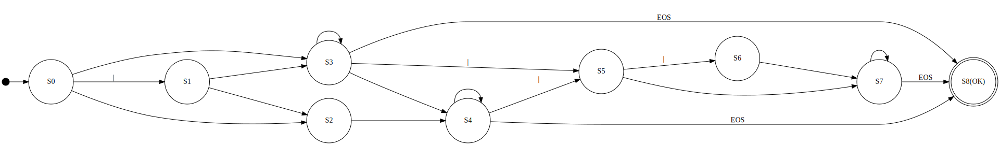 * この図から想定される浮動小数点数のジャクソン構造図を記述してみてください --- #### 浮動小数点数のジャクソン構造図による表現例 ------ 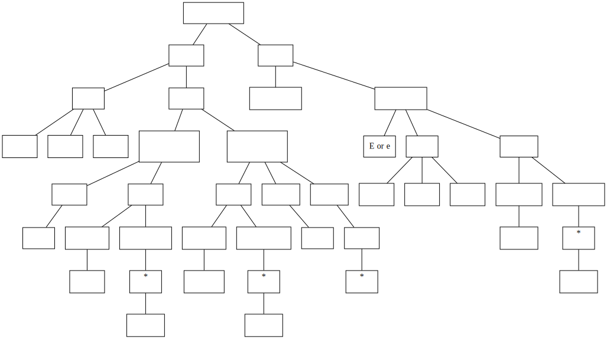 --- #### 前掲の構造図から導出したプログラム例 ------ ```c #include <stdio.h> int is_float(char *s) { if (*s == '+' || *s == '-') { s++; } if (*s == '.') { s++; if ('0' <= *s && *s <= '9') { do { s++; } while ('0' <= *s && *s <= '9'); } else { return 0; } } else if ('0' <= *s && *s <= '9') { do { s++; } while ('0' <= *s && *s <= '9'); if (*s == '.') { do { s++; } while ('0' <= *s && *s <= '9'); } } else { return 0; } if (*s == 'E' || *s == 'e') { s++; if (*s == '+' || *s == '-') { s++; } if ('0' <= *s && *s <= '9') { do { s++; } while ('0' <= *s && *s <= '9'); } else { return 0; } } return *s == '\0'; } int main(void) { struct { char *s; int b; } tests[] = { { "", 0 }, { "+", 0 }, { "-", 0 }, { ".", 0 }, { "++", 0 }, { "--", 0 }, { "+.", 0 }, { "-.", 0 }, { "+0+", 0 }, { "-0-", 0 }, { "+1", 1 }, { "-1", 1 }, { "1", 1 }, { "+1.", 1 }, { "-1.", 1 }, { "1.", 1 }, { "+.1", 1 }, { "-.1", 1 }, { ".1", 1 }, { "+1234567890", 1 }, { "-1234567890", 1 }, { "1234567890", 1 }, { "+1234567890.", 1 }, { "-1234567890.", 1 }, { "1234567890.", 1 }, { "+.1234567890", 1 }, { "-.1234567890", 1 }, { ".1234567890", 1 }, { "1E", 0 }, { "1E+", 0 }, { "1E-", 0 }, { "1E+1", 1 }, { "1E-1", 1 }, { "1E1", 1 }, { "1E+1234567890", 1 }, { "1E-1234567890", 1 }, { "1E1234567890", 1 }, { "1.E1", 1 }, { ".1E1", 1 }, { "1e", 0 }, { "1e+", 0 }, { "1e-", 0 }, { "1e+1", 1 }, { "1e-1", 1 }, { "1e1", 1 }, { "1.e1", 1 }, { ".1e1", 1 }, }; int i; for (i = 0; i <div sizeof(tests)/sizeof(*tests); i++) { printf("'%s'\t%s\n", tests[i].s, tests[i].b == is_float(tests[i].s) ? "OK" : "NG"); } return 0; } ``` --- #### 例題４ C言語のソースからコメントを除去する #### ジャクソン構造図の例 ------ 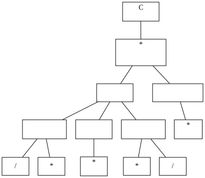 --- ### 先読み技法とは ------ * 前掲のジャクソン構造図をプログラムに変換する際に必要になる技法 * 未処理の入力の一部を先に参照し、現在の処理での判断に利用するアルゴリズム * コンパイラの構文解析でも重要な技法であり、構文解析器は先読みした入力トークン列使用して次に適用すべき生成規則を決定する --- ### 先読み技法の例 #### uniq -c コマンドを模倣するためのジャクソン構造図 ------ <div style="width:400px;background-color:white;margin:auto">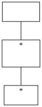</div> --- #### 前掲の構造図から導出したプログラム例 ------ ```perl #!/usr/bin/env perl $next = <>; while ($next) { $n = 0; $curr = $next; while ($next && $curr eq $next) { $n++; $next = <>; } printf("%d %s", $n, $curr); } ``` --- #### 例題４の構造図から導出したプログラム例 ------ ```c /* 先読み技法を使ったコメント除去プログラム例 */ #include <stdio.h> int main(void) { int c; int n; c = getchar(); while (c != EOF) { while (c != EOF) { n = getchar(); if (c == '/' && n == '*') { c = getchar(); break; } else { putchar(c); c = n; } } while (c != EOF) { n = getchar(); if (c == '*' && n == '/') { c = getchar(); break; } else { c = n; } } } return 0; } ``` --- #### 参考 先読み技法を使わないプログラム例 ------ ```c /* 先読み技法を使わないコメント除去プログラム */ #include <stdio.h> int main(void) { int c; while (1) { while ((c = getchar()) != EOF) { if (c == '/') { while ((c = getchar()) == '/') { putchar(c); } if (c == '*') break; putchar('/'); if (c == EOF) break; } putchar(c); } if (c == EOF) break; while ((c = getchar()) != EOF) { if (c == '*') { while ((c = getchar()) == '*') { } if (c == '/') break; if (c == EOF) break; } } if (c == EOF) break; } return 0; } ``` --- ### まとめ ------ * ジャクソン構造化プログラミングはダイクストラの主張の１階部分によくマッチする手法である * 先読み処理はジャクソン構造化プログラミングにおいて必須の技法となっている * テキスト位置に状態を持たせすぎるとプログラムは柔軟性を失う --- ### ご視聴ありがとうござました